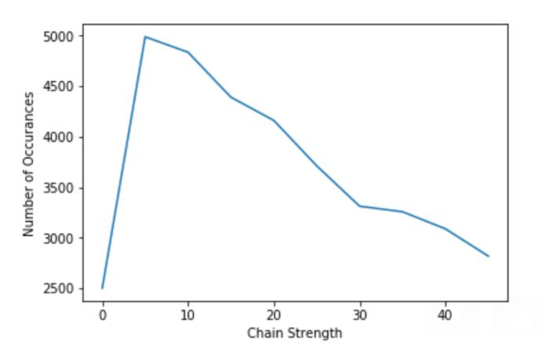
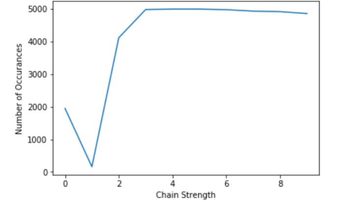
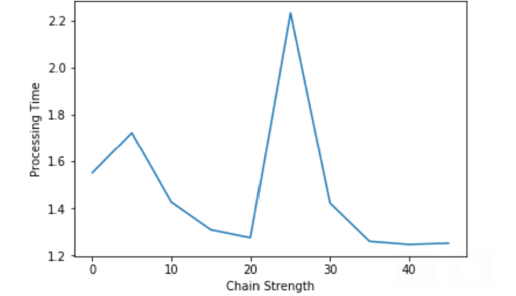
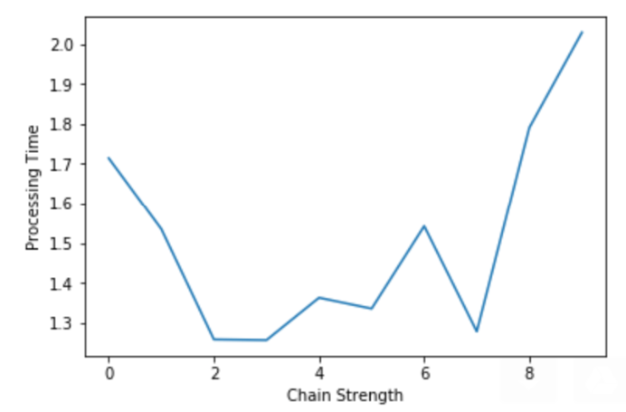
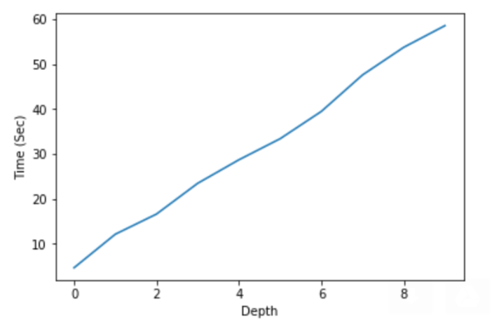
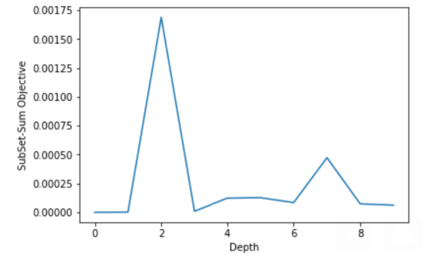
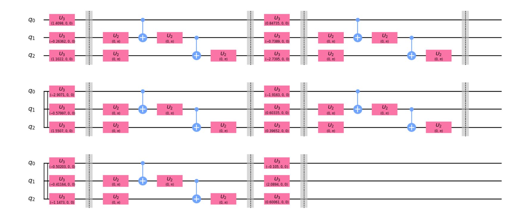

The Subset Sum Problem belongs to category of decision problems. The problem states that given a set (or multiset) of integers, is it possible to construct a non-empty subset whose sum is equal to zero?
For example, given the set { − 40 , − 2 , 1 , 2 , 3 , 4 , 5 , 6 } , the answer is "yes" because the subset { − 2 , 2 } sums to zero.
The Subset Sum Problem belongs to complexity class of NP-complete, meaning it is easier to evaluate whether the final result obtained is correct or not. Also, this checking can be done in polynomial time. The problem itself takes non-deterministic polynomial time to find the solution. The subset sum problem is used in the field of complexity theory and cryptography.
In computational complexity theory, a problem is NP-complete when it can be solved by a restricted class of brute force search algorithms and it can be used to simulate any other problem with a similar algorithm. More precisely, each input to the problem should be associated with a set of solutions of polynomial length, whose validity can be tested quickly (in polynomial time), such that the output for any input is "yes" if the solution set is non-empty and "no" if it is empty (source : wikipedia).
The Subset Sum Problem can be thought of as a modification to knapsack problem where the limit of the bag is infinite and the assumption that the weight of the elements can ne negative.
OTHER VARIATIONS OF THE PROBLEM
Subset Sum Problem where the sum is equal to some constant. This variation is extenion of the question such that the sum instead of 0 can be any other integer k Example - Suppose the parent set is {− 2 , 0 , 1 , 3}. and we are find subset such that sum equals 2. The answer is "yes" the subset {− 2 , 1 , 3} gives the sum=2.
Subset Sum Problem where it is posibble to subdivide this set into two strict subsets such that the sum of elements of one set is equal to another set.
Example - Suppose the parent set is {− 2 , 0 , 1 , 3}. The answer is "yes" the subsets are {− 2 , 3} and {0 , 1 } where the sum of elements is 1
.
PROJECT APPROACH
For our project, we will try to implement the Subset Sum Problem problem using Quantum Computers.So suppose we have 'x' elements in our set and we are supposed to find the subset with 'm' elements such that m<=x and the sum of 'm' elements =0. So, to work with Quantum Circuits we will have 'x' Qubits as our input to the circuit and then the output will be in terms of quibit value {0,1}. If the ith line's output is '0' it signifies that the ith element is not included in our answer. Similarly, If the ith line's output is '1' it signifies that the ith element is included in our answer.
In our poject, we will be working on both the QAOA algorithm in Qiskit and the Quantum Annealing algorithm in DWAVE system. The objective of our project is to compare the two algorithms and try to compare the results obtained from both the methods and finally create an analysis table about it.
Finally, we will be comparing these two approaches with the existing classical approach.
Classical Approach
Using Dynamic programming the best solution is in terms of O(2n). This is an exponential complexity which increases heavily with larger n.
There are various code available online for the following subset sum problem.
Theory of VQE (Quantum Approximate Optimization Algorithm) and QAOA
For combinatorial optimization, the Variational-Quantum-Eigensolver (VQE) gives better results than classical algorithms.
The Variational-Quantum-Eigensolver (VQE) [1, 2] is a quantum/classical hybrid algorithm that can be used to find eigenvalues of a (often large) matrix
H. When this algorithm is used in quantum simulations, H is typically the Hamiltonian of some system. In this hybrid algorithm a quantum subroutine is run inside of a classical optimization loop. The quantum subroutine has two fundamental steps:
1 . Prepare the quantum state |Ψ(vec(θ))⟩, often called the ansatz.
2 . Measure the expectation value ⟨Ψ(vec(θ))|H|Ψ(vec(θ))⟩.
(source)
So the VQE algorithm works as a subrotine to our QAOA algorithm. This VQE is used to solve minimize/maximize the parameterss for our ising Hamiltonian generated.The heart of the QAOA relies on the use of unitary operators dependent on 2 p angles, where p > 1 is an input integer. These operators are iteratively applied on a state that is an equal-weighted quantum superposition of all the possible states in the computational basis. In each iteration, the state is measured in the computational basis and
C ( z ) is calculated. After a sufficient number of repetitions, the value of C ( z ) is almost optimal, and the state being measured is close to being optimal as well.
(source : wikipedia).
The QAOA algorithm solves the Combinatorial optimization problems are specified by n bits and m clauses. Each clause is a constraint on a subset of the bits which is satisfied for certain assignments of those bits and unsatisfied for the other assignments. The objective function, defined on n bit strings, is the number of satisfied clauses, C(z) = Σ Cα(z) where z = z 1,z 2 ...,zn is the bit string and Cα(z) = 1 if z satisfies clause α and 0 otherwise. Typically Cα depends on only a few of the n bits. Satisfiability asks if there is a stringthat satisfies every clause. In the QAOA algorithm our motive is to find Approximate Optimization(To find a string (z) for which C(z) is close to the maximum).
QAOA (Qiskit) for our problem
To implement QAOA we will be using Qiskit Aqua as it has well pre-defined libraries to make our task simpler. The Qiskit itself provides implementation examples of TSP problem,Vertex cut problem which act as the foundation for our implementation.The next step in designing the QAOA is to create a cost function for our problem. This will be really helpful because using this we can also design the QUBO for our DWAVE simulation. Also we will be trying to show the results obtained using SPSA optimizers for different circuit depths and different number of trial runs.
One assumption we have made for our problem is that the sum we are required to find is possible to achieve from our parent set
So let us assume that the cost function for our problem is C.
C = Σ Xi ai for i =1 to number of elements in our set, where Xi belongs to {1,0} 1: if that element is taken in our final solution set 0: if not taken in our final solution set and ai is the ith element in our initial set.
Challenges with this cost function
The cost function is known but its QUBO formulation is still unknown.
Reason The above Cost function we have written is not in the form QUBO (2 ising model Hamiltonian ). The QUBO format should be in terms of XTQX which is not the case with us. This is essential because in QAOA or any other optimization algorithm, the first step is to generate the QUBO and then try to minimize or maximize it. But the cost function we have is not in that form. Solution 1 : Use of Docplex. This is a IBM designed optimization library which takes input in terms of classical function and returns the QUBO form i.e in 2 ising model Hamiltonian form. To obtain the accurate Hamiltonian from Docplex we need to optimize our function and add constraints to our function to obtain te best hamiltonian for our problem. The issue with this is that there are no specific constraints for our problem. So the Hamiltonian we construct is not in the optimized form.
Solution 2 : Use of library PyQubo. This is another alternative to our problem which generates the QUBO (2 ising model Hamiltonian) directly without adding any constraints to our input function.
Let us for a while assume that the cost function we established is correct. The problem arises is to determine what the minimum energy level will be for the given sum.
Reason We don't know whether minimizing or maximizing the cost function will yield the lowest energy level or not.
Solution: As now we are able to formulate our problem in terms of Hamiltonian, we now can minimize our energy levels for our correct solution.
Also, in the paper "Quantum Algorithms of the Subset-Sum Problem on a Quantum Computer" by Weng-Long Chang et al the authors discuss the approach of using Nuclear Magnetic resonance(NMR) to solve this problem.As discussed by authors in the paper they have stated that the QUBO implementation for the problem is challenging.(link to paper)
So we use the approach of Docplex and Pyqubo to solve our problem. We use PyQubo to generate our Hamiltonian and then we feed it to our docplex for minimiaztion. We could have just skipped the use of Docplex but then it is a better wrapper class for the Qiskit Aqua so we used it.
DWave (Quantum Annealing)
Quantum annealing (QA) is a metaheuristic for finding the global minimum of a given objective function over a given set of candidate states (candidate solutions), by a process using quantum tunneling. Quantum annealing is used mainly for problems where the search space is discrete (combinatorial optimization problems) with many local minima; such as finding the ground state of a spin glass.This system uses a 128 qubits.D-Wave's architecture differs from traditional quantum computers.
It is not known to be polynomially equivalent to a universal quantum computer and, in particular, cannot execute Shor's algorithm because Shor's algorithm is not a hill climbing process. Shor's algorithm requires a universal quantum computer. D-Wave claims only to do quantum annealing.
From the implementation of QAOA we can extract the QUBO and plug it into the DWAVE program.We also have to work out the embedding for our problem
The QUBO Formulation :
minimize Y=XTQX
To convert Y into symmetric form we can replace qijby (qij+qji)/2 where i is not equal to j.
This information that we are extracting is from the QAOA . We will be using this QUBO information and then construct the implicit and explicit embedding for it.
Challenges in DWave
As the number of elements increases or decreases in our problem set the problem of fitting the problem in our 4x4 Bipartite graph changes. Solution: We can do is implicit embedding reducing the complexity. But this may reduce the accuracy of our results.
Timeline and individual Contribution
NAME/WEEK
ATHARVA GUPTA
KUSHAL BATRA
COMMENTS
Week 1
Understand the problem. Select the algorithm to work on+ maintain project report
Understand the problem. Select the algorithm to work on+ maintain website
---------------------
Oct 28
---------------------
---------------------
Feedback received from professor
Week 2
Work on Implementation using D-Wave(Quantum Annealing) + Explore research papers, other examples and then identify the challenges explicitly for our problem
Work on Implementation using Qiskit(QAOA) + Explore research papers, other examples like TSP, Vehivcle routing problems and then identify the challenges explicitly for our problem
discuss challenges and look for alternate solutions
Week 3
Figure out the QUBO for Subset Sum Problem + Work on Docplex and PyQubo
Figure out the QUBO for Subset Sum Problem + Work on Docplex and PyQubo
Discuss with TA or professor on how to formulate QUBO for Subset Sum Problem and keep working on special case as a backup
Nov 12
---------------------
---------------------
Feedback received from professor
Week 4
Complete the implementation in DWave(Quantum Annealing)
Complete the implementation in Qiskit(QAOA)
Discuss about various assumptions made for our problem
Week 5
Do comparison analysis of various algortihms used for our problem
Do comparison analysis of various algortihms used for our problem
Discuss and create final report for our solution
Results and discussions
Analyzing results from DWAVE
Three elements in the set: Occurrences (correct solution) vs the chain strength
We ran a simple for loop for 'chain strength' from 0 -> 50 (with an increment of 5) to determine the variations in the occurrence of our chain strength. For this particular example, in our set we had elements {2 , 2 , 4} and the sum to find = k = 4. We observe that for this particular the subset solution we have 2 solutions {2 , 2} and {4}. In the solution, both the solutions have negative energy levels. We observe that the graph has a peak at chain strength = 5. We ran our code for different sets and for different sets of the element. We saw that chain strength = 5 gives best result for sets where the number of sets in the set = 3. With an increase in this cardinality of strength, we get an increase in the chain strength value. Fig.1
Fig.2 The first graph is for 'chain strength' from 0 -> 50 (with increment of 5). The second graph is chain strength from 0->5 (with increment of 0.5)
Processing time vs chain strength
This graph had an interesting pattern. When the chain strength crosses the point of 25 the processing time decrease. There can be two reasons for this. Firstly, as chain strength increases the solution {2,2} chances/occurrences increases (as coupling strength is high). Secondly, it might be possible that till chain strength 20 the servers were busy and hence the high processing time. We ruled out the second scenario by running our solutions 3 times and still obtained somewhat same graph.
Fig.1Fig.2
The first graph is for 'chain strength' from 0 -> 50 (with increment of 5). The second graph is chain strength from 0->10 (with increment of 1).
Analyzing results from QISKIT
3 elements in the set: Processing Time vs the circuit depth
We initially expected the graph between time vs depth to be exponential but our results show that this dependence of time on depth of the circuit is linear. We were not able to assess the reason for this behaviour. Fig.5
The Subset-Sum Objective vs depth
As expected from the graph, more depth we add to the circuit more accurate the results we obtain. Subset Sum objective for the correct solution should be zero. So the graph turns out to be a graph in terms of error deviation from 0 with respect to depth of the circuit. Fig.6
The Circuit obtained for three elements with depth =5
Fig.7
Comparing the results from QISKIT and DWAVE
The solution obtained from DWave takes less time to compute results as compared to Qiskit Aqua (with minimim depth). This information can be extracted by comparing the graphs in fig 1 and fig 5
When n (#no. of elements in the set increases) increases the solution sample also degrades exponentilly in both Dwave and Qiskit. The degardation trend is more prominenet in case of Dwave when compared with Qiskit.
Weakness with Dwave is that as the problem set space increases the number of used qubit also increases and in Dwave the chimera graph is not completely uniform. In case of Qiskit , the number of qubo's are limited with the IBM's quantum achitecture.
Future Work
Try to implement manual embedding for Dwave solution to increase purity of our solution states. This is because when we are dealing with n>=10 our solution sets start giving impure states.
Similarly in QAOA if we are able to generate the Hamiltonian using some other method instead of Docplex or PyQubo we will get better and faster solution. This is because Docplex and Pyqubo are libraries which are operated or executed in classical computer.
REFERENCE PAPER
[1] https://en.wikipedia.org/wiki/NP-completeness
[2] Bani-Ahmad, Sulieman. (2015). The Subset-Sum Problem: Revisited with
an Improved Approximated Solution. International Journal of Computer
Applications. 114. 10.5120/20043-7214.
[3] Bernstein, Daniel Jeffery, Stacey Lange, Tanja Meurer, Alexander.
(2013). Quantum Algorithms for the Subset-Sum Problem. 10.1007/978-
3-642-38616-9-2.
[4] Daskin, Ammar. (2017). A Quantum Approach to Subset-Sum and Similar
Problems.
[5] Flaxman, Abraham & Przydatek, Bartosz. (2005). Solving Medium-
Density Subset Sum Problems in Expected Polynomial Time. Lecture
Notes in Computer Science. 3404. 305-314. 10.1007/978-3-540-31856-
9
25.
[6] Zahedinejad, Ehsan & Zaribafiyan, Arman. (2017). Combinatorial Opti-
mization on Gate Model Quantum Computers: A Survey.
[7] Lobe, Elisabeth. (2017). Solving Combinatorial Optimization Problems
via D-Wave’s Quantum Annealer
[8]Dinneen, Michael J; Hua, Richard; Calude, Cristian S
Theoretical Computer Science, Vol. 701, pp. 54 - 69.
[9]A QUBO Model for the Traveling Salesman Problem with Time Windows
by Papalitsas, Christos; Andronikos, Theodore; Giannakis, Konstantinos;
Algorithms, 10/2019, Volume 12, Issue 11
[10]Constraint Embedding for Solving Optimization Problems on Quantum Annealers
by Vyskocil, Tomas; Djidjev, Hristo
2019 IEEE International Parallel and Distributed Processing Symposium Workshops (IPDPSW), 05/2019
[11]Quantum algorithms for algebraic problems
by Childs, Andrew M; van Dam, Wim
Reviews of Modern Physics, 01/2010, Volume 82, Issue 1
[12]Quantum Algorithms of the Subset-Sum Problem on a Quantum Computer
by Weng-Long Chang; Ting-Ting Ren; Mang Feng;2009 WASE International Conference on Information Engineering, 07/2009
------------------------------------------------------------------